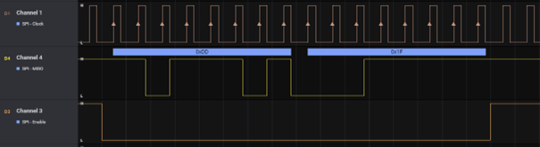

Results
Contents
Results#
General Results#
In the end everything worked as intended.
The stretch goal of a State Machine was left out, because it seemed unnecessary.
I uploaded the results to YouTube

SPI (SPIMCP3201)#
The FPGA can communicate to the MCP3201 ADC via SPI. By pulling the CS Pin low, the ADC sends its 12 bit data back over the serial MISO line.
Another clock divider had to be used, to shift the clock to the right so the CS Pin and the clk Pin wouldn't go low at the same time. This could lead to a potential glitch due a time that is refered in the datasheet as Tsucs.
The Communication was observed and verified via a logic analyzer:

Conversion Modules#
The Temperature was read correctly by verifying it with another househould temperature.
Takeaways#
In this project the basis for a future complex Watercooling Loop controler has been built. The developed modules can be used to expand to more than just one Fan, Temperature Sensors, and pumps.
A few problems have been encounterd while developing the ReadTach and Conversion Modules, which deepend my understanding of the Vivado and Verilog development environment.
In Future work, a more complex Control-Feedback-Loop will be developed to really take advantage of the sensor data, and take it above everything else that currently exists in the market.
I will develop and upload the future work in the coming months.
Improovement Ideas#
the natural overflow of numbers could be used for some of the Clock Dividers
Using a multichannel ADC for multiple Temperature sensors could safe on hardware costs.
Implementation of a Clock Divider Module, because the same block got used in multiple modules
Using the Files#
"The easy way"#
If you don't have Vivado allready, install it. For that you can follow this tutorial from realdigital.org
Then you can clone the project from my GitHub repository or download the zip and unpack it. In the repository you find the project propsal in the ReadMe file, and two Vivado Project files. The FinalProject_ReadTach file should not be necessary, because it was only used to test and simulate the ReadTach module. The FinalProject File contains the Code which was presented in the Video. You can open it in the IDE by opening the FinalProject.xpr file. To programm the board you have to Open the Hardware Manager in the IDE (on the left), connect to the Boolean Board, and then upload the .bit file, located in FpgaFanCtrl\FinalProject\FinalProject.runs\impl_1
"The hard way"#
You can use a makefile to generate the .bit file and upload it to the Boolean automaticaly. For that you can follow the instructions from my professors Q&A page.
Depending on your skillset, this might be the easy way for you.